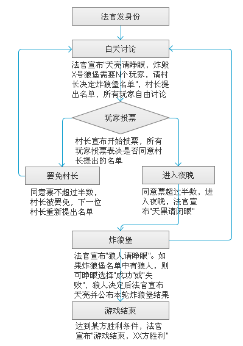

月圆之夜，村民体内的黑暗血液被唤醒，他们变身为狼，张开了血腥的利爪……五座古怪的城堡出现在村庄外，狼嚎声打破原有的宁静。不安和猜疑四处弥漫，村民们开始呐喊。炸毁城堡是唯一的求生之路，但狼人就隐藏在他们之中……
游戏分为两大阵营：狼人方和村民方。
狼人方：
狼人：隐藏在村民中，设法阻碍村民炸毁狼堡。
村民方：
村民：成功炸毁五座狼堡中的三座。
村长：村长由所有玩家轮流担任，负责提出本轮炸狼堡的人选名单。村长顺序由法官决定。
游戏按白天和夜晚交替进行，白天又分为讨论和投票两个阶段。
讨论阶段：村长提出本轮前往炸狼堡的人选名单，随后所有玩家自由发言。参与玩家数量不同时，每轮需要炸狼堡的人数也不同，具体数量见下表：
| 游戏人数 | 5 | 6 | 7 | 8-10 |
| 1号狼堡 | 2 | 2 | 2 | 3 |
| 2号狼堡 | 3 | 3 | 3 | 4 |
| 3号狼堡 | 2 | 4 | 3 | 4 |
| 4号狼堡 | 3 | 3 | 4☆ | 5☆ |
| 5号狼堡 | 3 | 4 | 4 | 5 |
☆7-10人游戏时攻击4号狼堡需要出现两张“失败牌”才算狼人获得一次胜利，否则村民获得一次胜利。
投票阶段：村长宣布开始投票，所有玩家投票表决是否同意村长提出的名单，同意票超过半数则名单通过，进入夜晚，否则村长被罢免，由下一个村长重新提出炸狼堡人选。连续五次罢免村长则直接判狼人胜利。
夜晚：如果有狼人入选炸狼堡名单，则可睁眼选择炸狼堡“成功”还是“失败”。村民不需睁眼，默认为成功。如果入选炸狼堡名单所有人都选择成功，则该狼堡被炸毁。反之炸狼堡失败，狼人成功守卫一个狼堡。7-10人游戏时攻击4号狼堡需要出现两次“失败”才能守住狼堡，否则狼堡被炸毁。
狼人方：成功守卫三座狼堡不被炸毁，狼人胜利。
村民方：成功炸毁三座狼堡，村民胜利。
游戏可由5-10人同时进行。
| 5-6人 | 2狼人 |
| 7-9人 | 3狼人 |
| 10人 | 4狼人 |